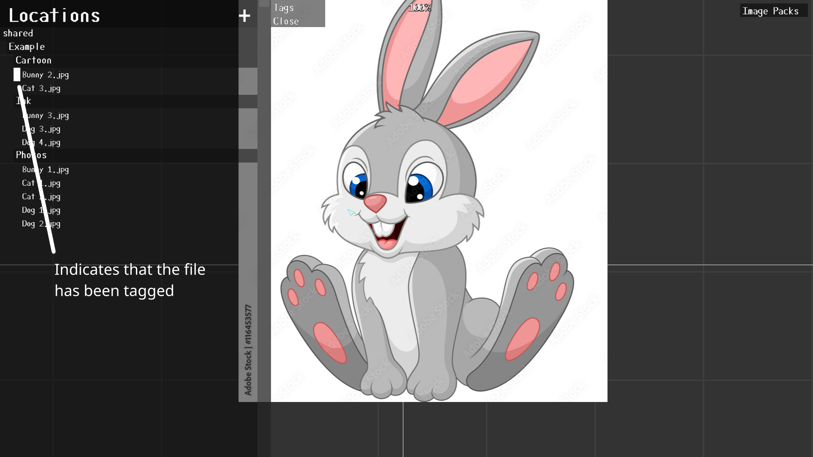
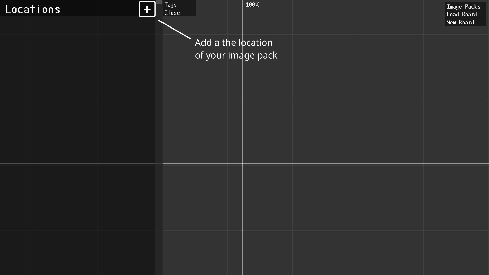
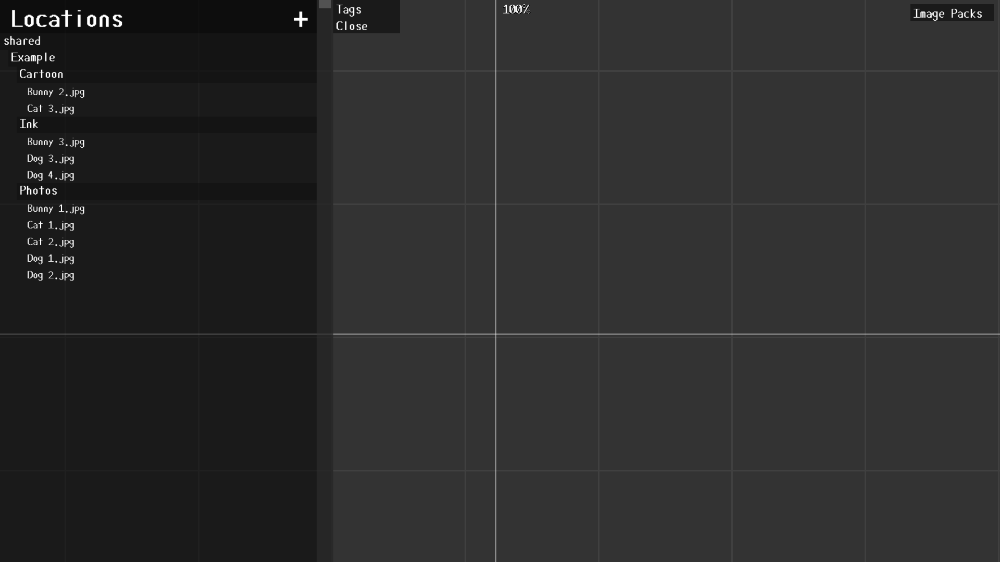
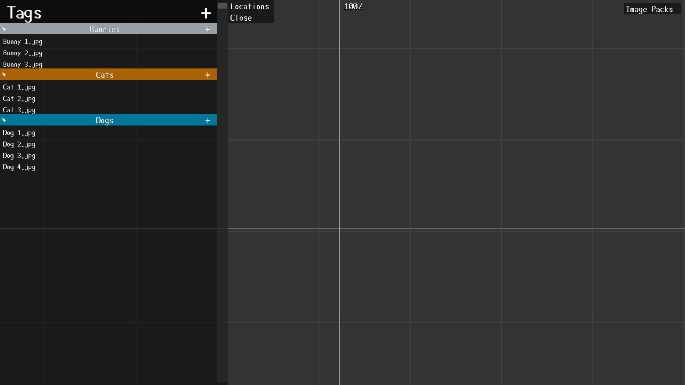
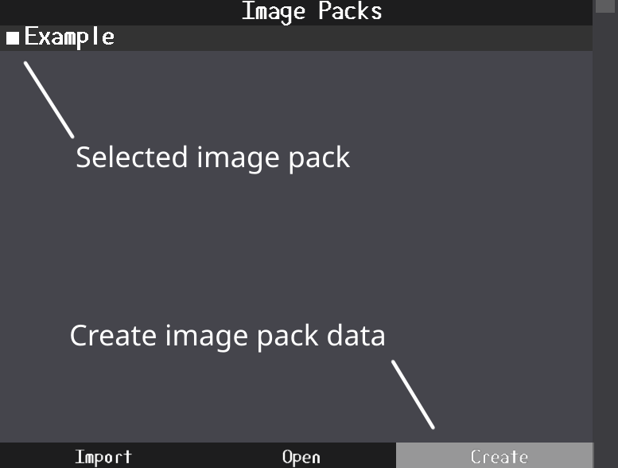

The Main window is where you can place and alter reference images. Below is a list of shortcuts

Image boards save the layout of images in a ".brd" file. These files are stored in the "boards" folder and can be saved/loaded from the board buttons on the top left or from dragging and dropping a ".brd" file from the boards folder. Image boards only save the images on the board and the view and scale of the main window. Tags and locations are not affected by the image board file.
Displays a list of saved locations. Locations point to folders of images that you want to use as references. From this view, you can select images place them on the board. Pressing the "+" button will bring up a file explorer for you to select the folder you want to add.

New locations are displayed in a list. Clicking the head of a location will expand its contents. If you press the delete key while hovering over a main folder, it will remove it from the list.

Note that folders have a black backing and files don't. Clicking on a file will add it to the image preview where you can place on the board by clicking. You can also add it to a tag by right clicking the heading of the tag you want to add it to.

If the image is already tagged, it will display a white indicator by the file name in the file browser.
Tags allow you to organize large groups of images outside of folders. Clicking the "+" button will add a new tag.

Clicking the on the name will let you edit it. The three sliders change the tags background color. The confirm button will submit the tag and the delete button will cancel.

The same principle applies to tags where clicking on them will expand their contents. Clicking on a image in the tag will add it to the preview where you click it on the board. Pressing the edit button on a tag will bring up the previous menu but pressing delete will remove the tag from the list. You can also remove a tag by hovering over it and pressing the delete key. If you press the "+" button on a tag, it will add a sub tag to the main tag.
There are two ways to add an image to a tag. The first is to load an image into the preview (either by clicking on an image in the locations or tag menus) and right clicking the tag you want to add it to. The other way is to select the image and right click it and use the tag menu to add it to a tag. Doing the same to an already tagged image will remove it from the tag. Note that if an image is tagged, a white square appear by the tag it belongs to.


Image packs are an experimental idea only found in RIA. An image pack contains pre-tagged files so they can easily be shared between users. Image packs are stored in the "shared" folder. Clicking import while an image pack is selected will display the folders that the image pack uses.

The folders in an image pack are mostly used like categories. By selecting a folder, the user can choose what kind of images they want to import. In this case, the user doesn't want to import cartoon images but wants the photos and ink images.

After pressing import folders, the program will display all the tags and subtags that the image pack will create/add to. While the "Include Subtags" button is highlighted, the program will include the subtags in the image pack. Otherwise it will ignore subtags. Note, if you have a tag with the same name as one in the image pack, it will not overwrite the color data or tag data of your tag.

To create an image pack, create a folder in the "shared" folder of RIA and give it the name of your image pack. Add subfolders to the image pack to categorize the images you want to used. Move the images to the subfolders and the open RIA.
In this case, the whole "shared" folder was added to RIA so that all image packs can be easily accessed. The image pack we are working with is titled "Example". Go through each image and tag them.
The user in this case wants to tag everything by animal. Once you finish tagging your images, press the "Image Packs" button.
Select your image pack, in this case the image pack "Example" is the one we want to use, and press the "Create" button.
Just like that, a new image pack was created. Sharing the folder with any user will allow them to import tags from your image pack without having to go through and tag it themselves. Make sure that the "import.dat" file is in your image pack when sharing.